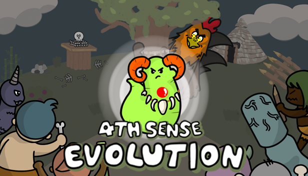

01 / A living colony
Help them survive
Build a settlement and guide a colony through a world of connected systems.
Soft Bulb Studios / In development
Be a god to the Jilongs.

Windows & macOS
Guide strange, colorful creatures who evolved telekinesis instead of limbs. Shape their DNA, perform miracles, and live with the karma your choices create.
In development · Free Stone Age demo available
A world shaped by you
01 / A living colony
Build a settlement and guide a colony through a world of connected systems.
02 / Evolution
Influence DNA and discover how changes affect your creatures and their world.
03 / Miracles & karma
Perform miracles and see how moral choices ripple through the simulation.
The Fourth Sense community
Join the official spaces for development updates, patch notes, feedback, and conversation about the game.